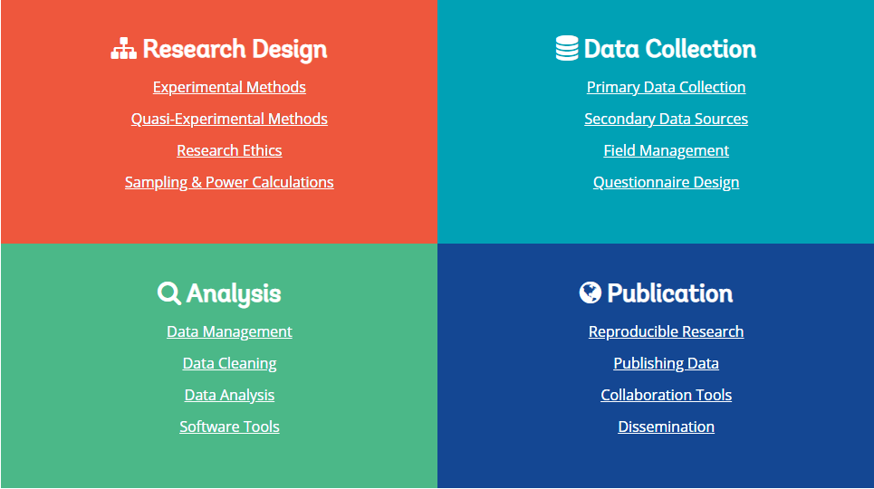
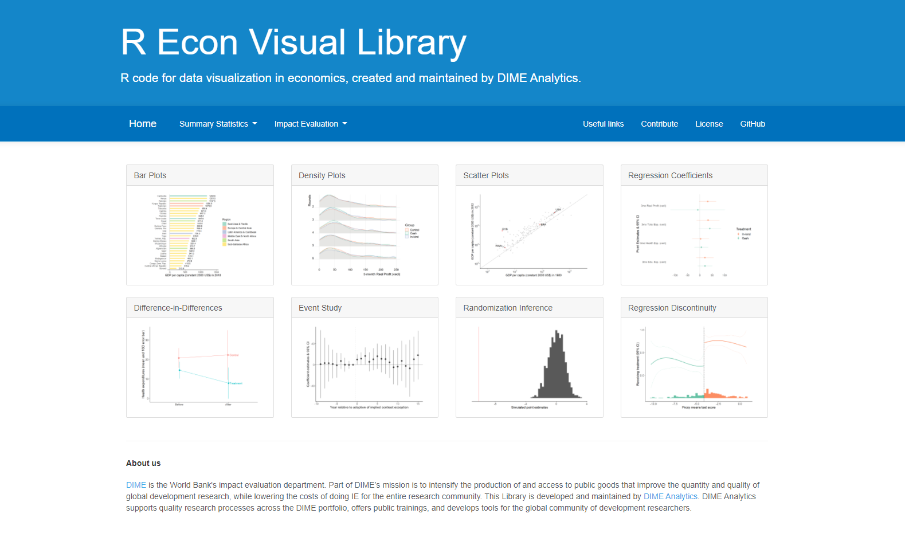
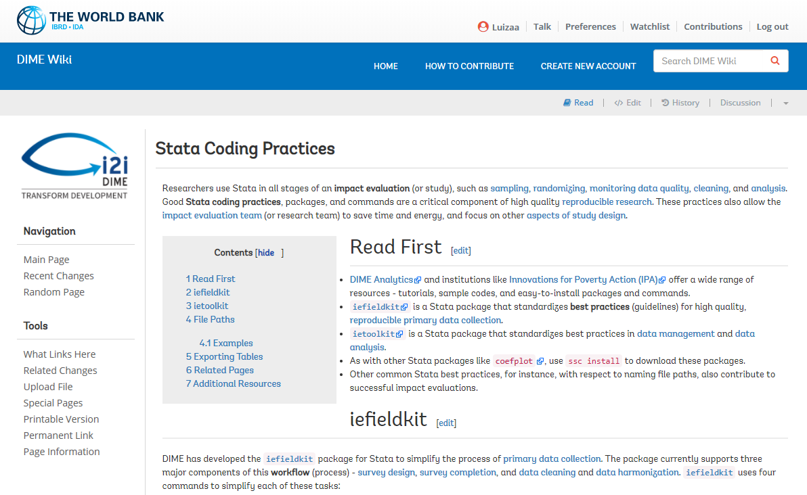
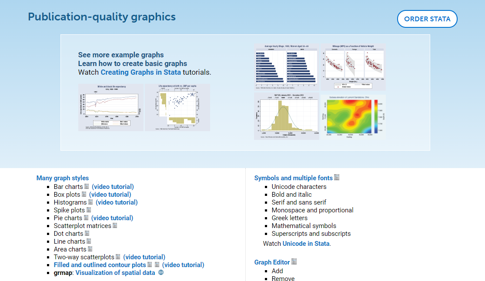
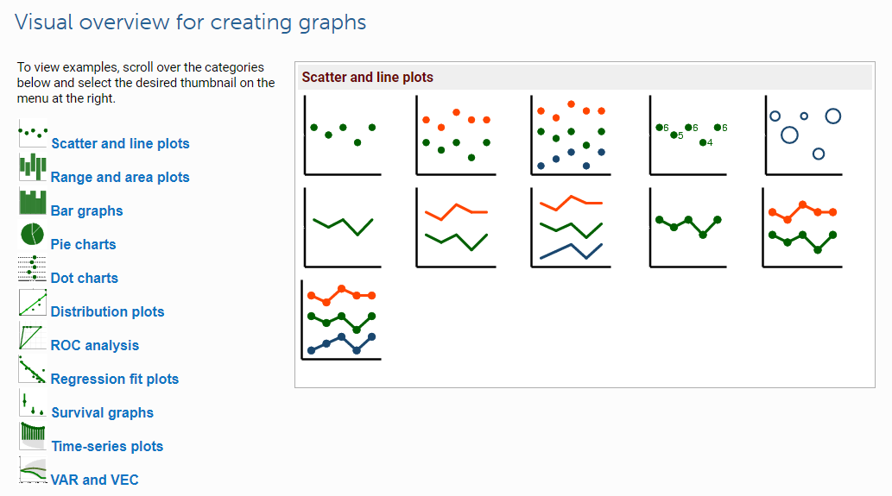
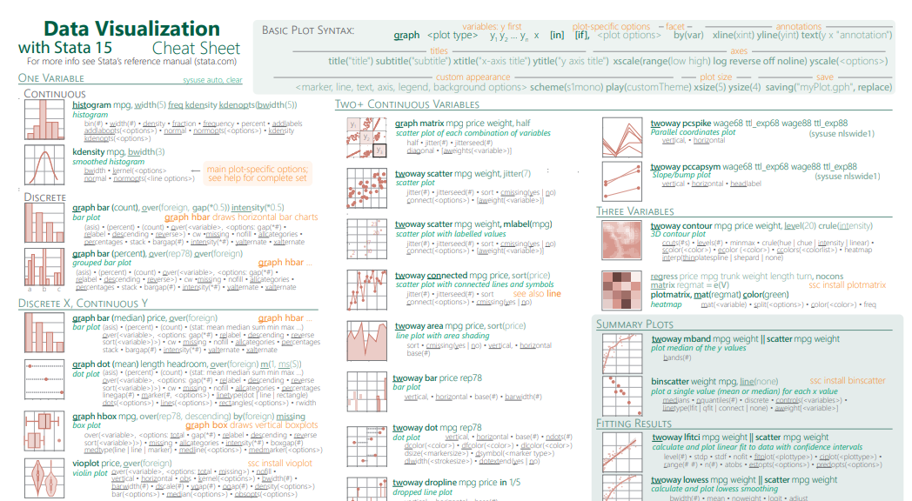
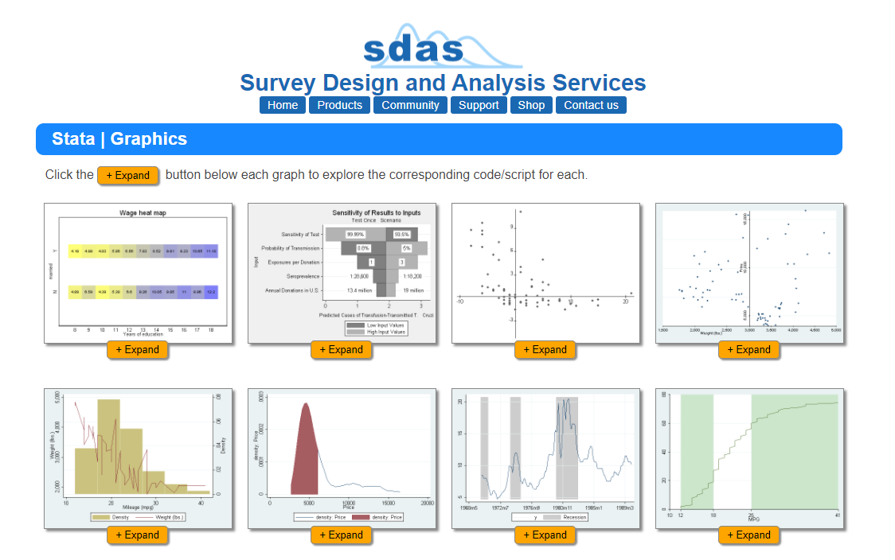
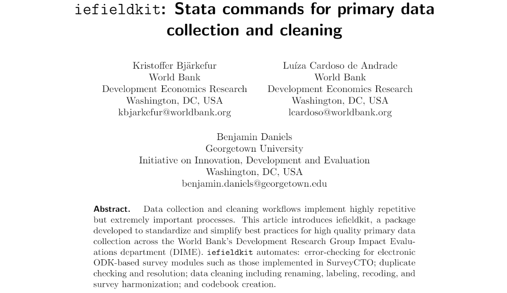
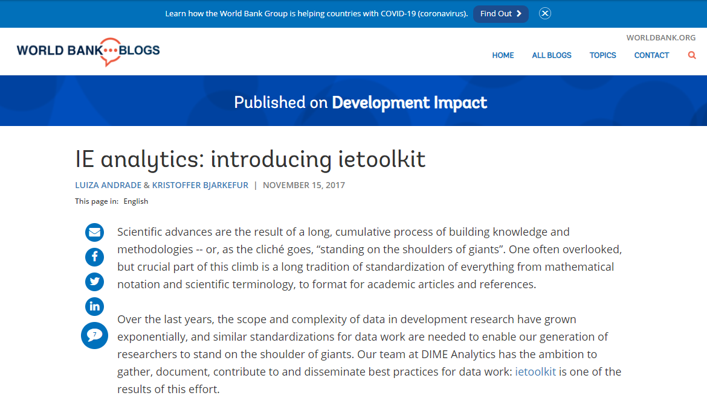
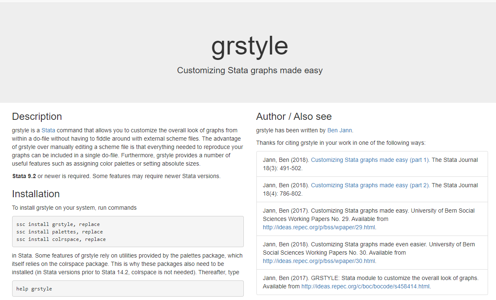

DIME Wiki

Development Research in Pratice: the DIME Data Handbook
Stata Visual Library

DIME Analytics coding best practices

Official Stata Graphics Resources

Visual overview for creating graphs in Stata

Stata cheatsheets

Stata graphs by Survey Design and Analysis Services

iefieldkit

ietoolkit

Customizing Stata graphs made easy
